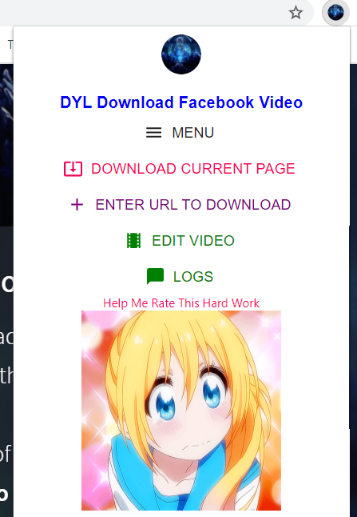
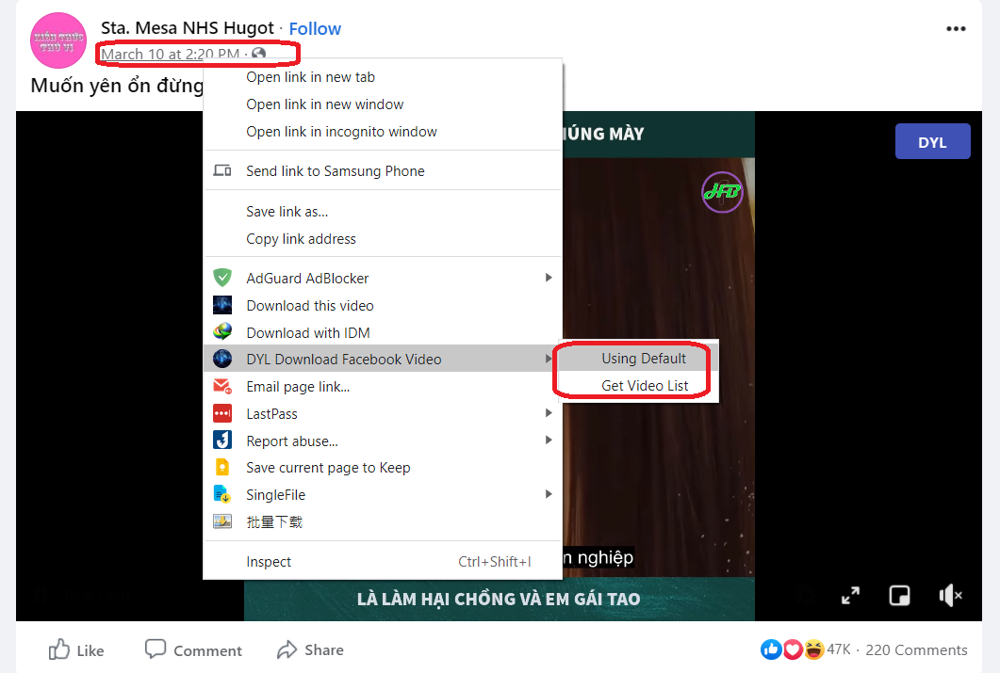
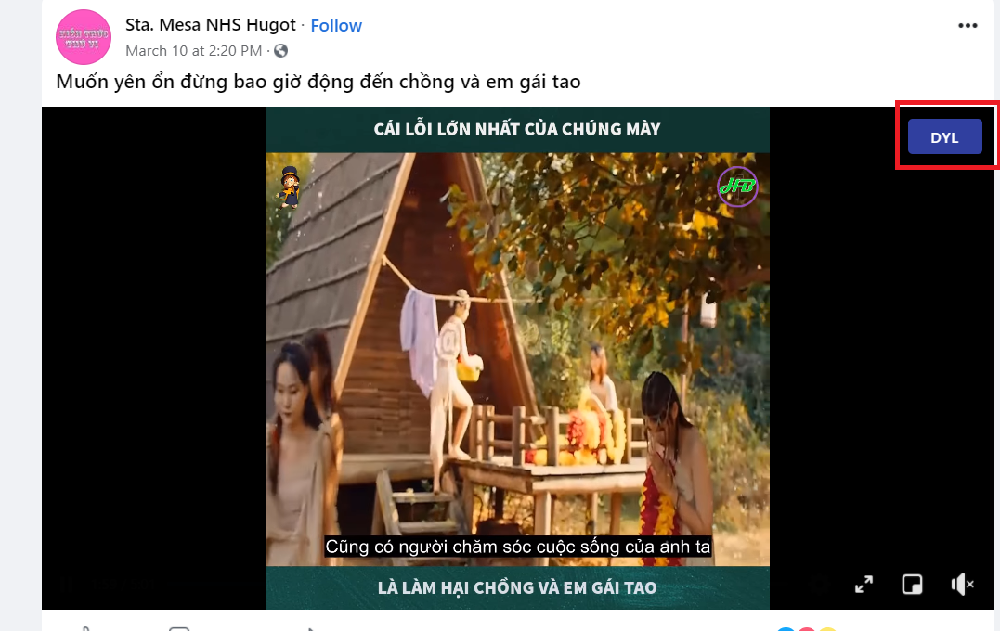
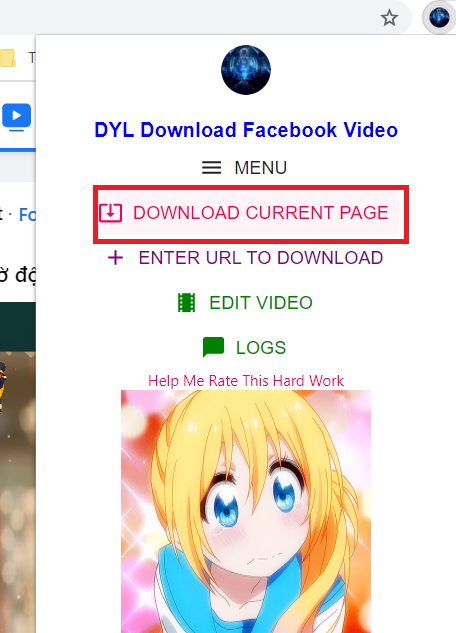
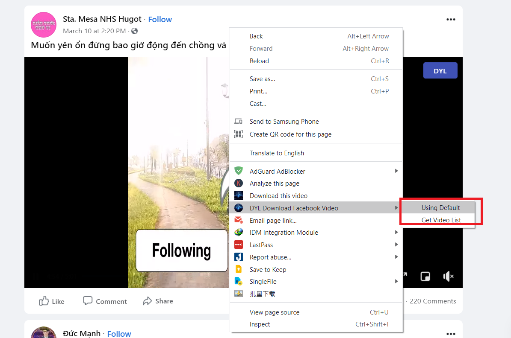
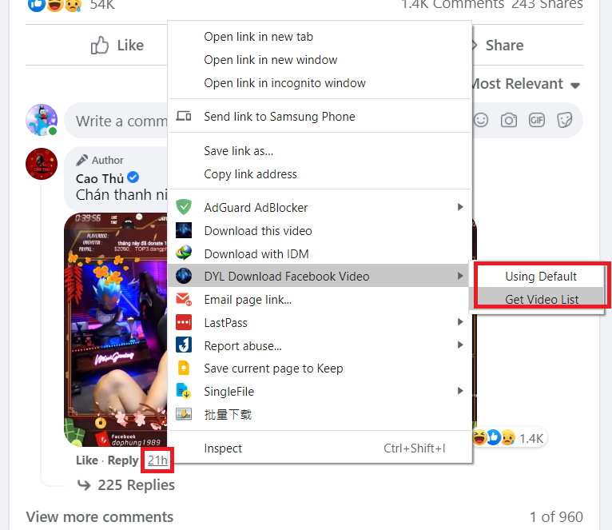
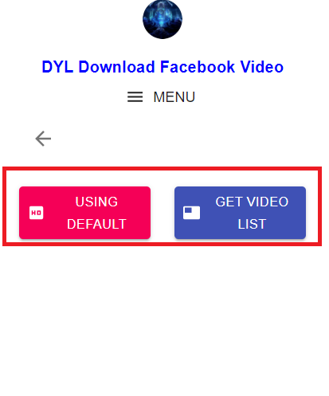
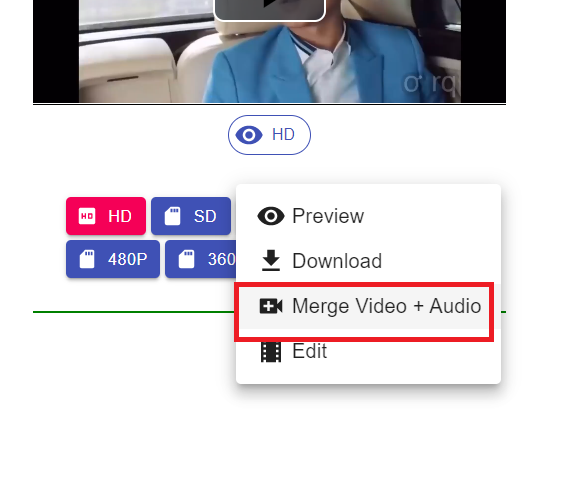

About Extension

- This is an extension that helps you download videos
from Facebook with different quality (including HD) and audio, you can get all
videos:
+ Get List video from specific URL
+ Group Facebook
(include private group)
Video page
+ Comment
Video
+ Video on Watch
+ Profile Video (From another
user or you)
- You can edit videos as simple as mute audio, trim
the video easily before downloading
- Download here
- Tutorial at here
- Help me report the error in here
How To Use
How To Use
- There are 3 ways to download:
+ Click on the popup icon on the
top-right and
make your choice.

+ Right-click on the timeline of a post or comment and choose
Using Default Or Get Video List

+ Click the button present on each
video (accuracy is about 85%)

- You
can download
the video by URL, to download the video based on the current URL, click the popup of the extension
and select
Download Current Page or right-click on the page and choose
Download Methods.


However, to be able to download the video correctly,
right-click on the timeline of the post or comment including that video and choose
Download Methods from the menu or you can click on that link, it will take you
to the post
or video and choose Download Current Page from the popup or Download
Methods from right-click menu.

- The displayed button may be
inaccurate and quite
annoying, you
can disable the button by clicking on it and selecting Hide or open the popup and select the
Setting section to disable this feature. I recommend clicking the timeline of the
post or
comment to download the video instead of relying on the button too much.
- There are 3 ways to
download,
now to download method, there are 2 download methods:
+ Download by
default
+ Get Video List

- Download by default will
choose
the highest quality video with sound if any, some videos sometimes used by this
download are
not good quality because the highest quality video often doesn't have sound, you
can choose
Get Video List instead.
- Get Video List helps you to choose videos and
audio with
different quality, but for video without HD or SD mark(like 1080P, 720P), there will be no
sound, but you can choose 'Merge Video + Audio' to combine video and audio together,
you can also
trim the video as you like by selecting 'Edit'.

- Download at here
- More at here
- Report at here